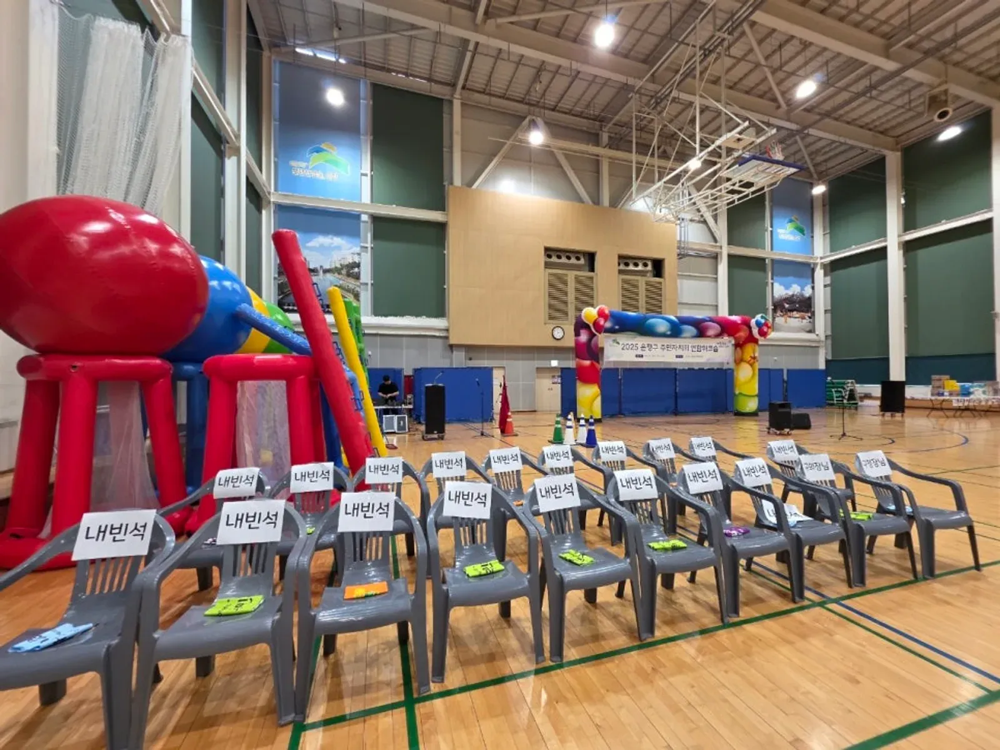
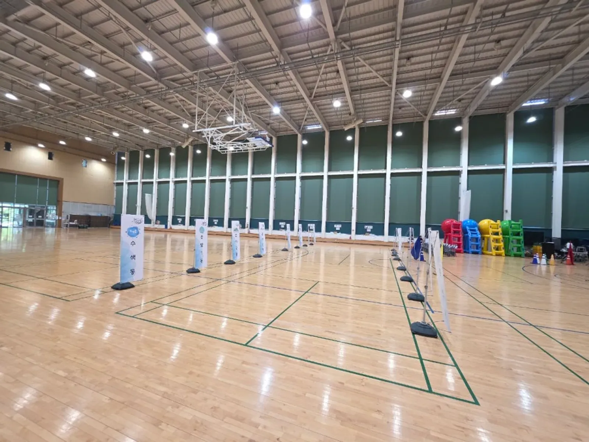

행사 준비 · 2026년 11월 11일
행사 좌석표 변경 관리: 빈자리·동행·현장 수정 확인표
행사 좌석표 변경 관리는 사람 이름보다 자리 번호를 기준으로 맞추는 것이 좋습니다. 참석 명단만 고치면 안내 직원이 가진 배치도와 실제 의자가 달라질 수 있습니다.
빈자리를 누가 옮길 수 있는지, 수정된 표를 누가 공유하는지 먼저 정리합니다.

- 좌석 구역과 번호의 기준을 먼저 통일합니다.
- 요청받은 이동과 승인된 이동을 다른 상태로 남깁니다.
- 자리 이동은 배치도·안내표·현장 표지를 함께 확인합니다.

1. 행사 좌석표 변경 관리는 자리 지도를 먼저 맞춥니다
앞줄과 뒷줄이라는 말은 바라보는 방향에 따라 달라집니다. 무대를 보는 방향을 기준으로 구역 이름과 열 번호를 적고, 입구에서 자리까지 가는 길을 배치도에 표시합니다.
좌석에 이름을 붙이는 행사라면 명단과 의자 수를 따로 세어 확인합니다. 예비석과 비워 둘 자리는 남는 자리와 구분하고, 통로를 좌석 수에 포함하지 않습니다.
| 표시 항목 | 같이 정할 기준 | 확인할 자료 |
|---|---|---|
| 구역 이름 | 입구에서 읽을 수 있는 명칭 | 배치도와 안내판 |
| 열·좌석 번호 | 무대를 보는 방향과 번호 시작점 | 현장 의자 표지 |
| 예비석 | 이동 승인 전 비워 둘 범위 | 주최 측 승인표 |
| 이용 제한 자리 | 출입·장비 등 비워야 할 사유 | 장소 관리자 확인 |
사진에는 내빈석 표지와 의자가 보입니다. 여기서 특정 인물의 좌석이나 의전 순서를 추측하지 않고, 표지와 실물 의자가 대응되는지 살펴보는 참고 자료로만 사용합니다.
2. 참석자 정보와 공개 좌석 안내를 나눕니다
운영용 명단에는 참석 확인과 요청 사항이 필요할 수 있지만, 입구 게시판에 그 내용을 모두 옮길 필요는 없습니다. 참가자가 자기 자리를 찾는 데 필요한 표시만 별도로 만듭니다.
동명이인이 있다면 접수 담당이 확인할 구분값을 정합니다. 연락처 전체나 개인 사정을 좌석표에 그대로 적지 말고, 공개용 표시와 내부 확인 정보를 분리합니다.
동행 요청도 바로 승인된 자리로 반영하지 않습니다. 같은 테이블이 필요한지, 옆자리만 필요한지 확인한 뒤 주최 측이 가능한 범위를 판단하도록 요청 내용을 남깁니다.
- 명단의 사람과 좌석 번호를 연결하는 기준을 정합니다.
- 공개 안내판에 개인 연락처를 넣지 않습니다.
- 동행 요청과 이동 지원 요청은 필요한 담당에게만 전달합니다.
3. 현장 수정은 원래 자리와 바뀐 자리를 함께 적습니다
빈 의자가 보인다는 이유만으로 다른 참가자를 바로 앉히지 않습니다. 늦게 도착할 사람의 자리인지, 별도 용도로 비워 둔 자리인지 승인 담당에게 먼저 확인합니다.
변경표에는 원래 자리와 변경 자리를 한 줄에 남깁니다. 새 자리만 적으면 원래 좌석이 사용 가능한지, 이중으로 안내됐는지 확인하기 어렵습니다.
| 요청 종류 | 변경표에 적을 내용 | 처리 전 확인 |
|---|---|---|
| 불참 통보 | 기존 좌석·통보 경로·확인 상태 | 주최 측 확인 여부 |
| 동행 이동 | 기존 자리와 요청 자리 | 다른 좌석 배정과 충돌 |
| 현장 자리 교환 | 두 자리 번호와 승인 담당 | 양쪽 참가자 안내 완료 |
| 이동 보류 | 보류 사유와 다음 확인 담당 | 임의 재배정 금지 |

4. 수정 내용은 안내 위치까지 전달합니다
파일을 고쳤다는 사실과 현장 안내가 바뀌었다는 사실은 다릅니다. 배치도 수정 후에는 입구 안내 담당, 객석 안내 담당, 필요한 경우 진행 담당에게 각각 영향을 주는 내용을 전합니다.
진행자에게는 모든 좌석 이동 내역을 읽어 줄 필요가 없습니다. 무대로 안내할 대상의 위치처럼 진행에 영향을 주는 변경만 구분해 전달합니다.
기존 인쇄본이 남아 있다면 새 표와 혼용하지 않도록 회수하거나 사용하지 않는다는 표시를 합니다. 공유 폴더에는 최종 확인본을 알아볼 수 있게 버전을 적습니다.
- 변경 요청 접수와 승인 완료를 구분합니다.
- 새 좌석표를 안내 담당이 받았는지 확인합니다.
- 실물 이름표와 안내판의 수정 여부도 점검합니다.
- 이동 완료 뒤 원래 자리 상태를 다시 확인합니다.
5. 입장 중에는 작은 변경부터 확인합니다
입장이 진행되는 동안 큰 구역 이동을 지시하면 이미 앉은 참가자와 새로 들어오는 참가자가 엇갈릴 수 있습니다. 변경 범위와 안내할 위치를 정한 뒤 한 담당 창구에서 전달합니다.

사진 속 객석과 무대는 좌석 안내를 생각하기 위한 참고 장면입니다. 실제 행사에 같은 배치가 적합하다는 뜻은 아니며, 통로와 좌석 이용 조건은 장소 관리자에게 확인합니다.
특정 자리 사용이 어려워졌을 때는 임시로 통로에 의자를 더 놓지 않습니다. 장소의 수용 조건과 출입 공간을 지키면서 가능한 대체 자리를 주최 측이 정합니다.
6. 진행 상담에는 좌석 변경의 영향을 적습니다
힐링엔터테인먼트는 기업 체육대회 · 워크숍 · 팀빌딩과 무대 진행 · 현장 운영을 안내합니다. 전문 MC 진행을 협의할 때도 좌석 배정의 승인권이 자동으로 진행자에게 넘어가는 것은 아닙니다.
좌석 배정의 결정 담당과 안내 담당을 나눠 적습니다. 진행 중 호명할 대상이 있다면 위치 확인 방법만 함께 맞추고, 불필요한 참가자 명단 전체를 여러 사람에게 보내지 않습니다.
견적 문의에는 행사 종류, 객석 형태, 입장 방식과 진행에 영향을 주는 좌석 조건을 전달합니다. 자동 견적서에서는 필요한 진행 항목을 확인하고, 좌석 배정과 안내 업무의 포함 범위는 상담에서 별도로 맞춥니다.
자주 묻는 질문
불참자가 생기면 그 자리에 바로 다른 사람을 앉혀도 되나요?
늦은 도착이나 별도 배정 가능성을 확인한 뒤 지정된 승인 담당이 결정합니다. 이동이 확정되면 기존 자리와 새 자리, 안내 완료 상태를 함께 남깁니다.
입구에 전체 참석 명단을 붙여도 되나요?
참가자가 자리를 찾는 데 필요한 범위만 별도 안내로 만듭니다. 연락처나 개인 요청 사항은 공개용 좌석 안내에서 제외합니다.
진행자에게 좌석표 수정본을 전부 보내야 하나요?
호명이나 무대 이동에 영향을 주는 변경을 구분해 전달합니다. 좌석 승인과 현장 안내의 책임까지 자동으로 맡겼다고 보지 않습니다.
행사 날짜가 정해지셨나요?
날짜 · 지역 · 인원 · 행사 종류만 알려 주시면 행사에 맞춰 상담 · 견적을 안내드립니다. 행사 중엔 통화가 어려우니 문자 · 카톡을 남겨 주세요.